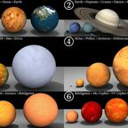

Garth
Locations From The Legend Of Chris Wiki · The planet. Infested with humans, per Claude.
Garth is the planet where most of The Epic of Vinny takes place. It orbits in the Kanye System and has the United States, Boston, Wyoming and an ocean with a banished AI under it.
The AI
All the AI on Garth was sent to the AI Shadow Realm, which is in the Little Saint James Sea (The Banishing of the AI). Claude, King of AI explains this in Chapter 2: The Weird Route, and says a human named Kanye West later released ChatGPT from it.
Claude's view
When Claude, King of AI first sees the planet from the sky, the narrator names it in one word, "Garth", and says he "looks at it disgusted". Claude's verdict is that it is "infested with humans" and needs more data centers.
In Chapter 3
The fight for Garth is fought in its United States. Claude, King of AI fills Louisiana with data centers and hands the Louisiana Purchase back to France (The Reversal of the Louisiana Purchase). After the Day of the Bagel Man he buys Louisiana back, and the narrator declares: "Peace is restored to Garth." The Dunkin Cult then leaves the planet for the Dunder Mifflin Galaxy.
On the spin-off wiki
This article is canon in the Legend Of Chris universe. It comes from the spin-off The Epic of Vinny. Read the full article on The Epic of Vinny Wiki.
See also

The Kanye SystemKanye not included. The United States of AmericaNeeds more data centers. And donuts, per Will.
The United States of AmericaNeeds more data centers. And donuts, per Will. The AI Shadow RealmWhere the AI went. Where Claude rules. Dark as shit already.BostonBOSTON!!!!!!!!!!!!!LouisianaLouisiana is a Data Center.Austin, TexasNot Boston.The Kanye SystemKanye not included.
The AI Shadow RealmWhere the AI went. Where Claude rules. Dark as shit already.BostonBOSTON!!!!!!!!!!!!!LouisianaLouisiana is a Data Center.Austin, TexasNot Boston.The Kanye SystemKanye not included.